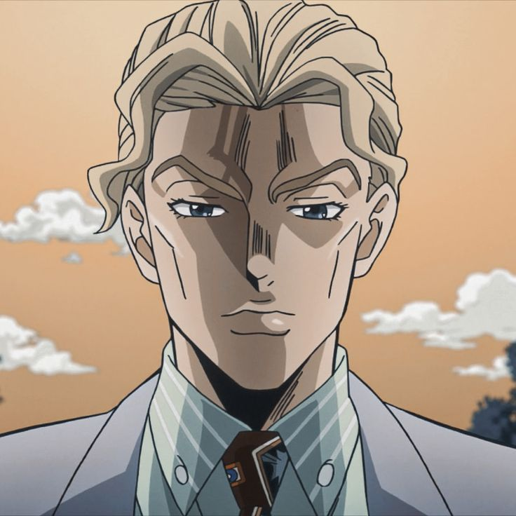

Ученик 10 класса и будущая проститутка

Меня зовут Степан Буклов. Мне 16 лет. Мой дом находится в северо-западной части Таллинна, в районе Кристине. Учусь в Таллинской Гимназии Мустйэ и домой возвращаюсь, самое позднее в пять вечера. Не курю, не выпиваю. Ложусь спать в 11 вечера и убеждаюсь, что получаю ровно восемь часов сна, несмотря ни на что. Перед сном я пью холодный чай, а двадцать минут уделяю ТикТоку, поэтому до утра сплю без особых проблем. Утром я просыпаюсь, не чувствуя ни усталости, ни стресса, словно младенец. На медосмотре мне сказали, что никаких проблем нет. Я пытаюсь донести, что я обычный человек, который хочет жить спокойной жизнью. Я не забиваю себе голову проблемами вроде побед или поражений, и не обзавожусь врагами, из-за которых не мог бы уснуть. Я знаю наверняка: в таком способе взаимодействия с обществом и кроется счастье. Хотя, если бы мне пришлось сражаться, я бы никому не проиграл.
ученик 10 класса
делать сайты с сомнительным содержанием
хорошо считать
делать работы вовремя
Ты меня видишь Джотаро?